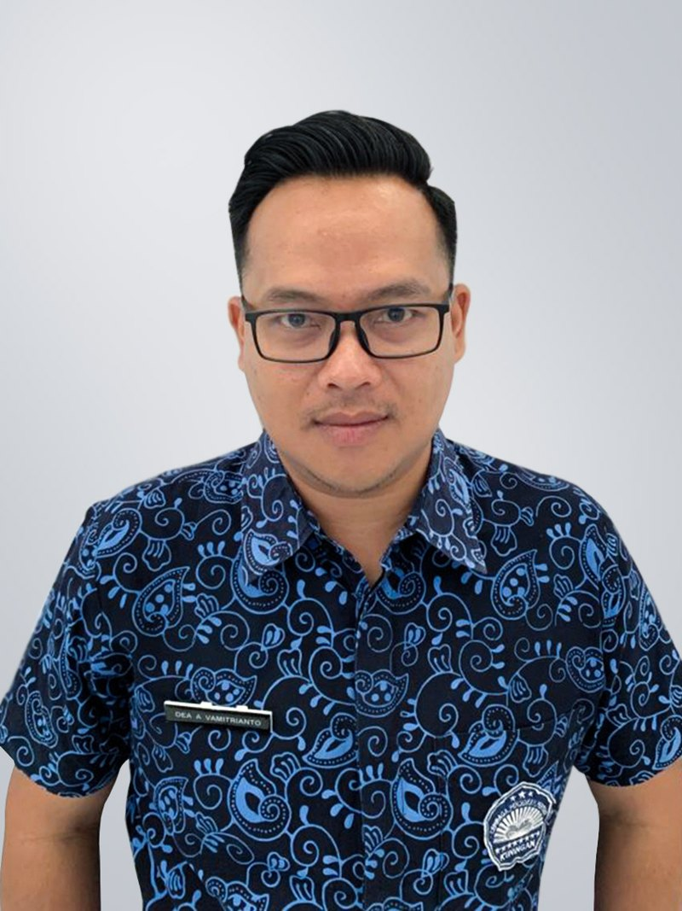
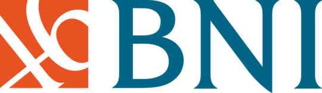
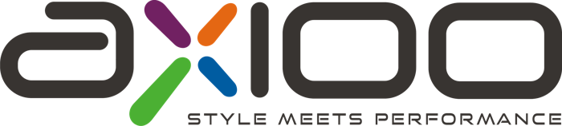

SMK Pertiwi Kuningan
Mencetak generasi cerdas, berkarakter, dan siap menghadapi dunia kerja melalui pendidikan yang berkualitas.

Mewujudkan Generasi Unggul
SMK Pertiwi Kuningan
Assalamu'alaikum Warahmatullahi Wabarakatuh. Puji syukur kita panjatkan ke hadirat Allah SWT, Tuhan Yang Maha Esa. Selamat datang di website resmi SMK Pertiwi Kuningan.
Kami berkomitmen untuk terus meningkatkan mutu pendidikan, menanamkan nilai-nilai karakter, serta membekali siswa dengan keterampilan teknologi dan bisnis yang relevan dengan kebutuhan dunia kerja. Dengan semangat kekeluargaan dan dedikasi seluruh guru dan tenaga kependidikan, kami siap membimbing putra-putri bangsa menuju masa depan yang gemilang.
Aktivitas Siswa
Membangun karakter unggul melalui pelestarian budaya, tradisi positif, dan penanaman nilai-nilai moral di lingkungan sekolah.
KAMI TELAH BEKERJA SAMA


Penerimaan Peserta Didik Baru (PPDB)
Bergabunglah bersama keluarga besar SMK Pertiwi Kuningan. Temukan informasi lengkap mengenai alur, syarat, dan jadwal pendaftaran peserta didik baru.